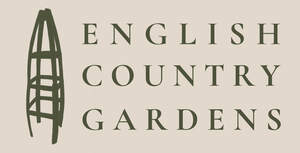

Trade Mark Journal No.2025/049 5 December 2025
UK00004299696 24 November 2025 (8,16,20,21,35,41)

- Class 8
- Hand tools and implements for gardening; garden trowels; garden forks; hand-held rakes; hand held cultivators; bulb planters; hand-held hoes; pruners; secateurs; loppers; hand saws for gardening; pruning saws; hedge trimmers hand operated; lawn edging tools hand operated; weeding tools; grafting tools; budding knives; gardening knives; soil scoops; planting dibbers; hand-held sprayer manual; watering nozzles; knives mutifunctional; garden scissors; spades; shovels; rakes; brushes; gardening tool bags.
- Class 16
- Printed magazines; periodicals; printed newsletters; printed brochures; printed gardening guides; printed books; stationary; writing paper; notebooks; journals; calendars; diaries; posters; art prints; gift bags; gift wrap; stickers; labels; printed photographs.
- Class 20
- Furniture; garden furniture; outdoor furniture; benches; tables; chairs; storage boxes non metallic; shelving units; plant pot stands; decorative objects made of wood wicker or plastic.
- Class 21
- Household kitchen utensils and containers; watering cans; plant pots; planters; vases; decorative glassware; garden sieves; flower sprayers manual; buckets; ceramic tableware; mugs; cups; plates; jugs; pitchers; compost bins household; gardening gloves.
- Class 35
- Retail services in relation to gardening tools, garden furniture, gardenware, plants, seeds and lifestyle goods; online retail services relating to gardening tools, plants, seeds, home décor, kitchenware, furniture and printed matter; mail order retail services; provision of online marketplace featuring lifestyle and gardening goods; advertising, marketing and promotional services; business management or retail stores.
- Class 41
- Publishing of online blogs and articles; providing online non-downloadable publications in fields of gardening, lifestyle and home design; educational services relating to gardening and lifestyle; conducting workshops, classes and seminars in gardening and horticulture; providing online videos and multimedia content; organisation of events, exhibitions and demonstrations for educational purposes.
ENGLISH COUNTRY GARDENS LTD